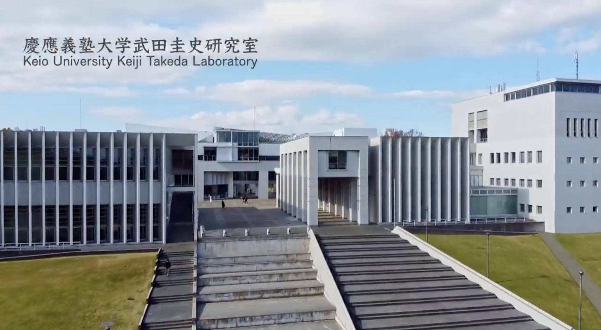

調査・サーベイ
関連研究や事例を調べ、研究の背景や課題を整理します。
CG・映像・光・音響を用いたメディア表現を研究しています。生成AI・ドローン・VR/AR/XRの実践的な応用にも取り組んでいます。
関連研究や事例を調べ、研究の背景や課題を整理します。
個人の研究テーマとグループ活動を通じて、制作・開発・実験に取り組みます。
中間・最終発表で進捗や成果を共有し、取り組みを深めます。
01 / Research areas
3DCG・アニメーション・映像表現
コンピュータグラフィックスによる映像表現を扱います。映像を構成する技術や技法を学び、制作を通じて表現の可能性を探ります。
機体開発・制御・飛行試験
信頼性・機動性の高いドローンの開発と応用を研究します。飛行試験、低遅延映像処理、自律飛行などを扱います。
体験設計・アプリケーション開発
VRアプリケーションの開発、VRChatなどの教育への応用、ドローンを用いたVRアプリ、WebとVR技術の融合を研究します。
撮影・編集・モーショングラフィックス
映像表現を支える技術・技法、新しい技術による表現、映像コンテンツの共同制作に取り組みます。
光・音響・空間への表現
プロジェクションマッピング、レーザー光線を用いた表現、音楽と映像の融合など、テクノロジーを用いた表現を実践します。
映像制作・新しい問題解決の手法
生成AIを活用した映像制作や、新たな問題解決手法の開発について研究します。
02 / Works & activities
作品の概要、関連する研究領域、制作物や公開リンクを掲載します。
展示や研究発表の内容、開催情報、発表資料を掲載します。
制作や実験の過程、イベントなど、研究会の活動を掲載します。
03 / Members
担当教員
Keiji Takeda
慶應義塾大学 環境情報学部
大学の教員紹介学生 / プロフィール掲載枠 01
学年・所属
研究テーマ・専門分野を掲載
学生 / プロフィール掲載枠 02
学年・所属
研究テーマ・専門分野を掲載
学生 / プロフィール掲載枠 03
学年・所属
研究テーマ・専門分野を掲載
学生の氏名・写真・プロフィールは掲載準備中です。上のカードはレイアウト確認用の掲載枠です。
04 / Connect with us
Collaboration & exchange
共同研究、技術や表現に関する意見交換、展示・取材など、研究会との交流に関するご相談はこちらへ。
For prospective students
関心のある研究テーマを見つけ、研究会の活動内容を確認したうえで、参加・履修についてご相談ください。
最新の履修条件・募集時期は担当教員へご確認ください。
05 / Access & contact

Shonan Fujisawa Campus
湘南台駅西口、または辻堂駅北口より
「慶応大学」行きバスをご利用ください。
研究室への訪問は、事前にメールでご相談ください。
Get in touch
共同研究・交流・取材、研究会への参加・履修のご相談。
武田圭史 / 2026年度春学期シラバス記載の連絡先